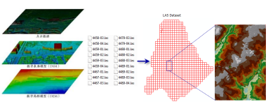

提供专业的空间数据采集服务，确保数据的准确性和完整性
空间数据采集是GIS系统的基础，我们提供专业的空间数据采集服务，包括遥感影像处理、GPS测量等，确保数据的准确性和完整性。
我们拥有专业的采集设备和技术团队，能够在各种复杂环境下进行数据采集，为客户提供高质量的空间数据。
我们的空间数据采集服务广泛应用于城市规划、环境监测、交通管理、国土资源等领域，为客户的决策提供科学依据。

处理各种分辨率的遥感影像，提取有价值的空间信息。
使用高精度GPS设备进行实地测量，获取准确的空间坐标。
建立完善的空间数据库，确保数据的安全存储和高效管理。
严格的质量控制流程，确保采集的数据符合客户的要求。